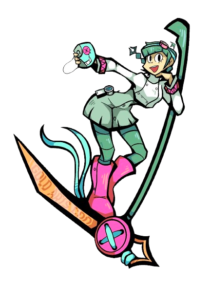

About Us

Hi i'm Zoe! Welcome to the official website for the UNCC Sewing and Cosplay club. We are a relatively new organization that is rapidly growing, and we are always looking for new members to join! Founded in 2024, our goal is to help encourage the UNCC community to not only learn how to sew but have fun with it too! As a part of that mission we teach others not only foundational sewing skills, but also about how to apply those skills to cosplay, showing that sewing is not only practical but fun. We host several trips and our annual event, Gold Arts Con! Which you can learn more about here on our Events page.